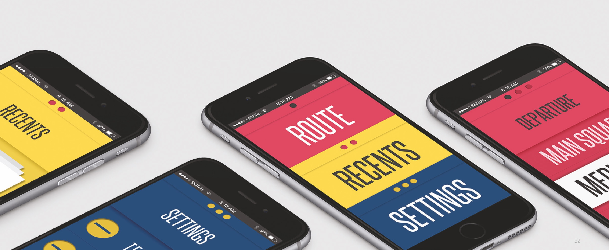

Brailliant
Tactile navigation band & watch for blind
UX, Product, Service Design
Korea University | 2015
Full 100pg PDF Report (Korean)
Role: Team Leader
User research, user scenario, product design, GUI design, IxD design, motion design, film production
Brailliant Design process film
Brailliant
A college campus is an active place for various students, but there are many inconveniences for visually impaired students. Brailliant is a GPS-based smart tactile navigation band for visually impaired college students who need safe, accurate and efficient navigation.
Product
Brailliant is a smart device that pairs with the app to function as a GPS navigation or a watch (while not in use) using tactile pressure on the wrist. The indicator moves left to right across the rail, and shifts top to bottom depending on the use of either watch or navigation. When an obstacle is detected, it distinguishes the type of the obstacle and alerts in different patterns of vibration for each. Brailliant is designed to be fashionable and inconspicuous, unlike an disability assistant device. Tone downed colors and band textures add on to the variety of selection.
[Watch Mode: User can tangibly feel the time with the tactile number indicator. Magnetic clasp structure allows user to easily wear the device.]
[Navigation Mode: The moving pointer will lightly press wrist to tell directions. Vibrations will tell various obstacles ahead.]
Application
The app consists of a simple layout with high contrast color and large prints for the visually impaired. For those who are unable recognize the position of the screen button, it is possible to operate with the volume button. Design inspired by Braille prints, the layout embraces embossed and engraved paper characteristics. Users can select departure and arrival place in the app for directions.